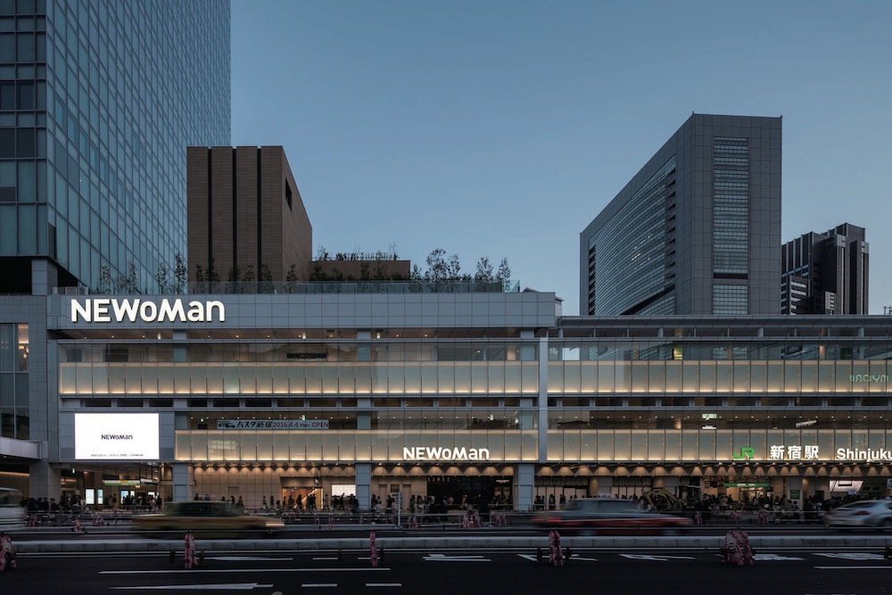
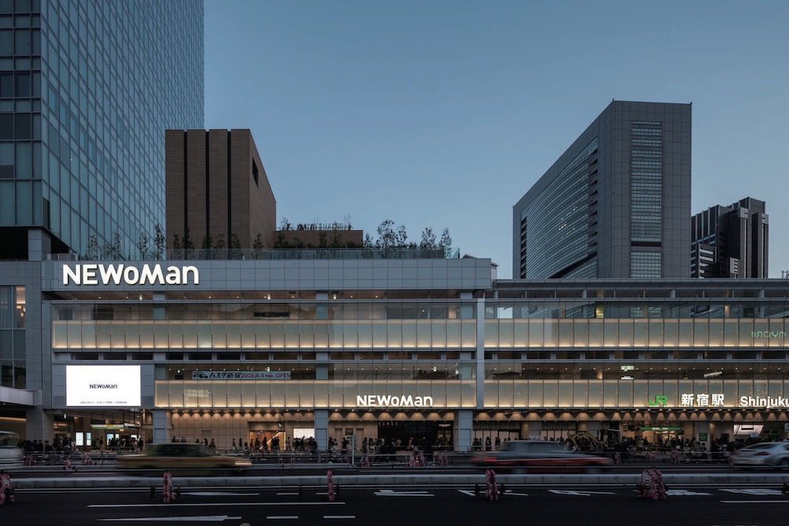
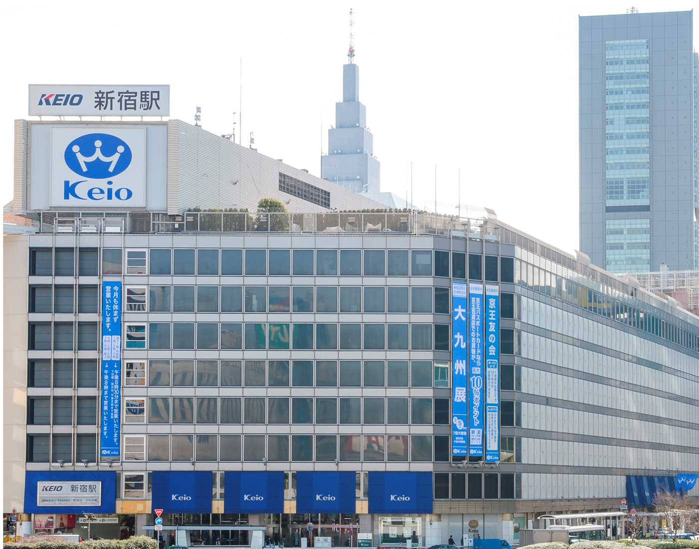
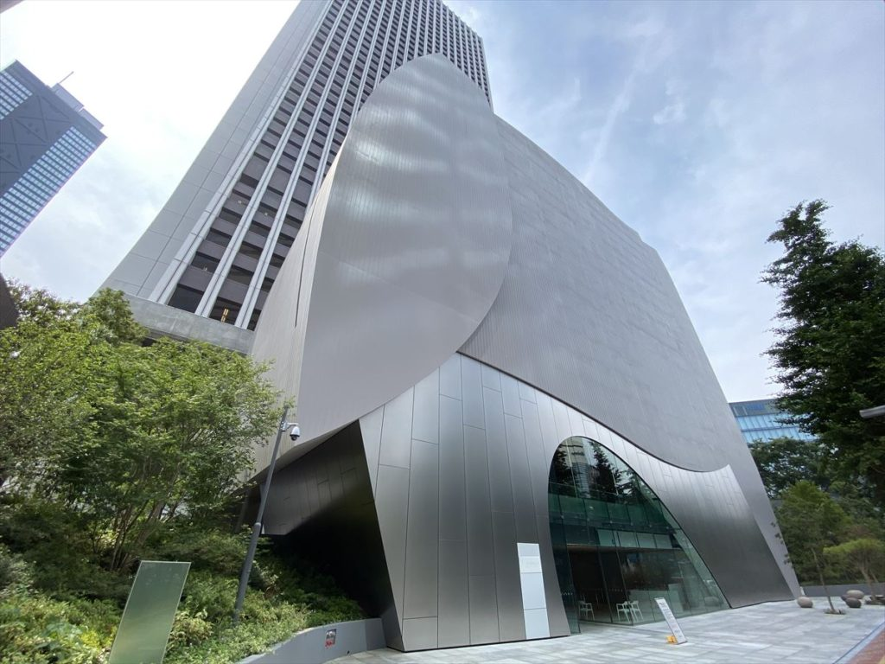

しんじゅくさんぽ


 

しんじゅくをおさんぽしよう
乗降客数世界一位の新宿駅周辺観光スポットをまとめました。
それぞれジャンルごとにまとめているので、目的に沿ったスポットが分かるようになっています。
有名な観光スポットから穴場のお散歩スポットまで幅広くご紹介します！
あなたもお気に入りのスポットが見つかるかも…？
さぁ、新宿をおさんぽしてみましょう！
どこにゆこう
-
[西口]
新宿のナイアガラの滝と呼ばれる滝が
新宿中央公園
あり、自然豊かな公園でおすすめです。 -
[南口]
元々皇室の庭園ということもあり荘厳な
新宿御苑
雰囲気の美しい庭園です。 -

[東口]
元々都電の引き込み線があった場所が
新宿遊歩道公園
草花が繁る憩いの路になりました。 -

[南口]
珍しい24時間営業の喫茶店百名店で
珈琲貴族エジンバラ
古くから沢山の人に愛されてきました。 -
[西口]
ホテルTHEKNOT一階にあるパン屋さん
MORETHAN Bakery
誰でも焼き立てパンを購入できます。 -
[東口]
駅前の3D巨大猫の足元にある喫茶店で
喫茶パステト
創作パフェと珈琲が楽しめます。 -
[南口]
新しい時代を生きる新しい女性のために
NEWoman
というコンセプトの商業施設です。 -

[西口]
京王線、小田急線から好アクセスで
京王百貨店
古くから愛されてきた百貨店です。 -
[東口]
ハイファッションのスポットとして
伊勢丹
新宿の顔となっているデパートです。 -

[南口]
駅近で吉本興業の芸人さんのライブを
ルミネtheよしもと
見ることが出来るのはここだけです。 -

[西口]
損保ジャパンが運営している美術館で
SOMPO美術館
ゴッホのひまわりを鑑賞出来ます。 -

[東口]
建物から覗くゴジラヘッドは時々光り
TOHOシネマズ新宿
かなりインパクトがあります！